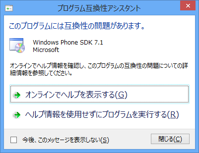
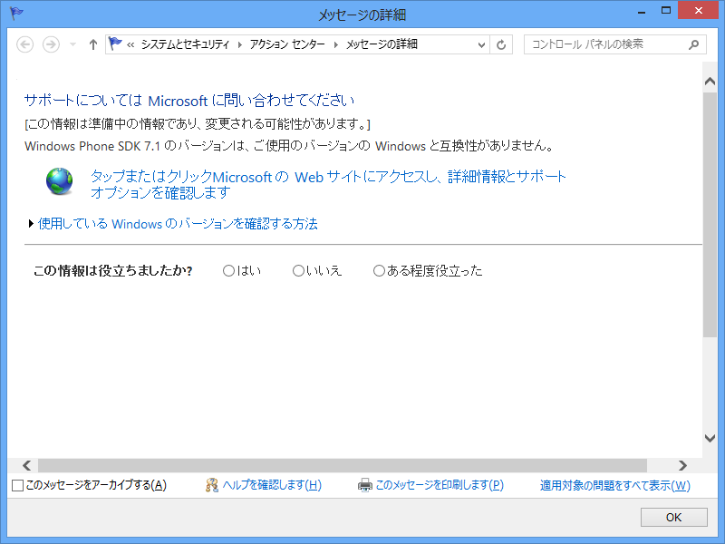

Windows Phone SDK 7.1 のバージョンは、ご使用のバージョンの Windows と互換性がありません
公開日：

ガッデム／(＾o＾)＼
連休中に Windows Phone アプリでも作るかなぁ、と思っていたらこれですよ！ どうも Windows Mobile の頃から、Windows のモバイルプラットフォーム開発にはこういうめんどくささがある。SDK と Visual Studio に組み合わせの制限があったりとか。

米国Microsoftは9月12日、次期モバイルOSのソフトウェア開発キットを提供する「Windows Phone SDK 8.0 プレビュー・プログラム」に対する申し込み受付を開始したことを、同社の公式ブログで発表した。
開発者は「Microsoft Connect」サイトから同プログラムに申し込みが可能で、米国西海岸時間9月17日の5時まで受け付ける。承認された場合、締め切り日から間もなく、Windows Phone 8 SDK（ソフトウェア開発キット）のダウンロード方法やサポート方法などを案内する連絡をMicrosoftから受けることになる。
マイクロソフト、「Windows Phone 8」の開発者向けSDKをリリースへ|Microsoftウォッチ|トピックス|Computerworld
おれはこっちももらえないし、悲しい（←だから早くアプリ作れっていったじゃん！）。というわけで、Metro アプリ*1でも作ることにしようかなと思っている。
*1:絶対こっちのほうがいい……ストアアプリだなんてやだ！